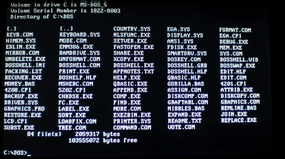

| Virus Name | Purpose |
|---|---|
| Malware | Software or program that can harm a computer's system once it is opened. It can gather data or make the computer do things without the user knowing. |
| Spyware | A device or software that spies and gathers user's personal data. It gets a copy of things the user sents through their PC. Usually, it targets banking credentials or other financial assets. |
| Scareware | These are pop-ups in your computer pretending to be messages from operating systems. They falsely tell you that your computer is infected with a virus and immediate action needs to be taken. However, clicking them can actually infect your computer. Talk about reverse psychology. |
| Trojan | Like the Trojan Horse, they're software that appear to be legitimate. However, once downloaded, it can do multiple harm in computers, from deleting data to opening backdoors to let unauthorized access inside. |
| Phishing | Rather than a physical virus, it is a technique form to spread them, such as Trojans. These are advertisement campaigns that pretends to be from a legitimate source, usually sent through emails. These emails deceive users into taking permissible actions. For example, downloading a program, buying a product, etc. |
| Polymorphic Virus | Probably my favorite and the most dangerous one. Now that AI has developed, it composes 90% of all viruses nowadays. These viruses changes their code algorithm through each infections, making them harder to detect. They are usually composed by different programming languages smashed into a single one. Due to this, we can't really predict what these viruses may do. It can do significant damage from deleting system32 to steal ID credentials. |
